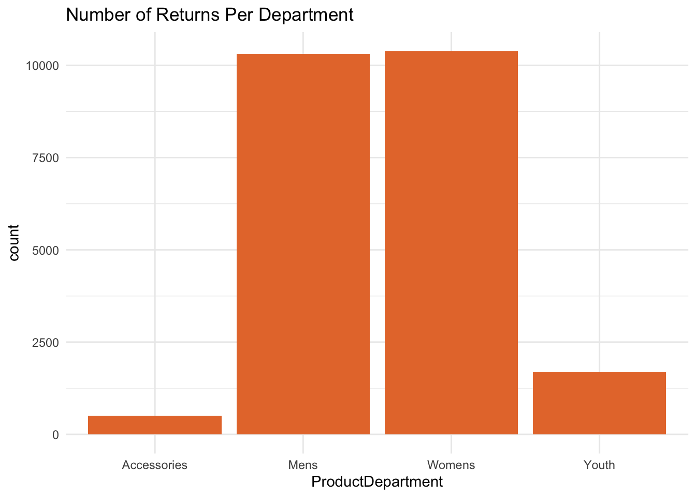
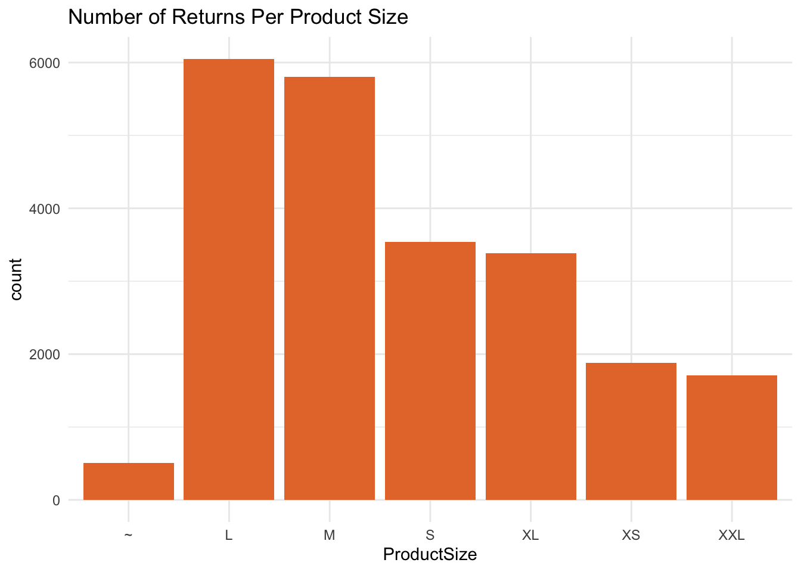
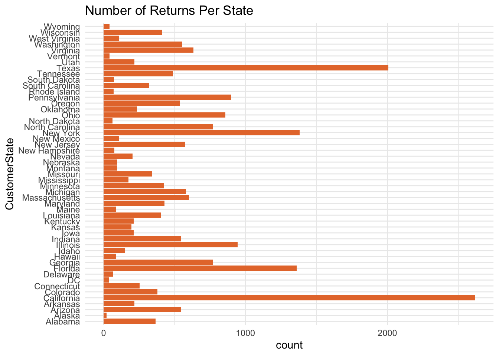

library(tidyverse)
library(lubridate)
library(caret)
library(glmnet)Approach and Methodology
To ensure proper analysis, I began by loading the necessary libraries and examining the train and test datasets to identify the variables available for analysis. Exploration of the data revealed trends in the number of returns across various variables such as ProductDepartment, ProductSize, and Returns Per State. Given the project objective of predicting the probability of item returns, I selected logistic regression, a well-suited model for binary dependent variables. To prepare the data, I developed a function to transform both the train and test data, ensuring dimensionality was kept in check by removing unnecessary columns such as dates and IDs. Additionally, I updated character data types to factors. Further exploration of the data led to the inclusion of additional features, such as “Season”, “CustomerAge”, “MSRP”, and “PriceRange”, that may play a significant role in predicting a customer’s probability of returning their product. I then ran the logistic model and examined the coefficients, noting the highest ratios for ProductDepartment, with a significant influence from men’s and women’s products. Noting that for future exploration, I concluded my model and wrote the submssion file.
Note: I had explored the idea of using rpart, rf and gbm, however I was not accustomed to using those models. There was much more refinement to be done, but the 3 hour constraint kept me focused on building a draft of the model. Would this go into production? No, but it would be a step in the right direction.
Load the required packages
Load the training and test data
train <- read_csv("train.csv")
test <- read_csv("test.csv")
glimpse(train)Rows: 64,912
Columns: 12
$ ID <chr> "58334388-e72d-40d3-afcf-59561c262e86", "fb73c186-ca…
$ OrderID <chr> "4fc2f4ea-7098-4e9d-87b1-52b6a9ee21fd", "4fc2f4ea-70…
$ CustomerID <chr> "c401d50e-37b7-45ea-801a-d71c13ea6387", "c401d50e-37…
$ CustomerState <chr> "Kentucky", "Kentucky", "Kentucky", "Kentucky", "Ind…
$ CustomerBirthDate <date> 1967-01-06, 1967-01-06, 1967-01-06, 1967-01-06, 197…
$ OrderDate <date> 2016-01-06, 2016-01-06, 2016-01-06, 2016-01-06, 201…
$ ProductDepartment <chr> "Youth", "Mens", "Mens", "Mens", "Womens", "Womens",…
$ ProductSize <chr> "M", "L", "XL", "L", "XS", "M", "XS", "M", "M", "M",…
$ ProductCost <dbl> 9, 17, 20, 17, 42, 39, 13, 3, 12, 27, 20, 23, 49, 16…
$ DiscountPct <dbl> 0.0356, 0.1192, 0.1698, 0.1973, 0.0663, 0.0501, 0.08…
$ PurchasePrice <dbl> 28.93, 44.92, 48.98, 51.37, 113.91, 121.59, 41.40, 1…
$ Returned <dbl> 0, 0, 0, 0, 0, 0, 0, 0, 0, 1, 0, 0, 0, 0, 1, 0, 1, 1…Data Exploration
# Look at Product Department
train %>%
filter(Returned == 1) %>%
ggplot(aes(x = ProductDepartment)) +
geom_bar(fill = "#e67838") +
labs(title = "Number of Returns Per Department") +
theme_minimal()
# Look at Product Size
train %>%
filter(Returned == 1) %>%
ggplot(aes(x = ProductSize)) +
geom_bar(fill = "#e67838") +
labs(title = "Number of Returns Per Product Size") +
theme_minimal()
#This won't be that valuable
train %>%
mutate(CustomerState = factor(CustomerState)) %>%
filter(Returned == 1) %>%
ggplot(aes(x = CustomerState)) +
coord_flip() +
geom_bar(fill = "#e67838") +
labs(title = "Number of Returns Per State") +
theme_minimal()
Feature Engineering
# Creates the features
buildFeatures <- function(ds){
CurrentDate <- Sys.Date()
ds %>%
mutate(Returned = factor(Returned, levels = c(0, 1), labels = c("No","Yes")),
Season = factor(case_when(months(OrderDate) %in% month.name[1:3] ~ "Winter",
months(OrderDate) %in% month.name[4:6] ~ "Spring",
months(OrderDate) %in% month.name[7:9] ~ "Summer",
months(OrderDate) %in% month.name[10:12] ~ "Fall")),
CustomerAge = year(as.period(interval(CustomerBirthDate,CurrentDate))),
MSRP = round(PurchasePrice / (1 - DiscountPct)),
PriceRange = factor(case_when(MSRP >= 13 & MSRP <= 30 ~ "$13-$30",
MSRP > 30 & MSRP <= 60 ~ "$31-$60",
MSRP > 60 & MSRP <= 100 ~ "$61-$100",
MSRP > 100 ~ ">$100")),
ProductDepartment = as.factor(ProductDepartment),
ProductSize = as.factor(ProductSize),
CustomerState = as.factor(CustomerState)
) %>%
select(-OrderDate,
-CustomerBirthDate,
-ID,
-OrderID,
-CustomerID)
}
IDCols <- test$ID
#Removes and adds columns for train and test sets
train <- buildFeatures(train)
test <- buildFeatures(test)
#Inspect the dataset before training the model
glimpse(train)Rows: 64,912
Columns: 11
$ CustomerState <fct> Kentucky, Kentucky, Kentucky, Kentucky, Indiana, Ind…
$ ProductDepartment <fct> Youth, Mens, Mens, Mens, Womens, Womens, Youth, Yout…
$ ProductSize <fct> M, L, XL, L, XS, M, XS, M, M, M, L, L, XL, M, XXL, M…
$ ProductCost <dbl> 9, 17, 20, 17, 42, 39, 13, 3, 12, 27, 20, 23, 49, 16…
$ DiscountPct <dbl> 0.0356, 0.1192, 0.1698, 0.1973, 0.0663, 0.0501, 0.08…
$ PurchasePrice <dbl> 28.93, 44.92, 48.98, 51.37, 113.91, 121.59, 41.40, 1…
$ Returned <fct> No, No, No, No, No, No, No, No, No, Yes, No, No, No,…
$ Season <fct> Winter, Winter, Winter, Winter, Winter, Winter, Wint…
$ CustomerAge <dbl> 56, 56, 56, 56, 44, 44, 44, 56, 56, 56, 58, 58, 39, …
$ MSRP <dbl> 30, 51, 59, 64, 122, 128, 45, 17, 55, 82, 91, 108, 9…
$ PriceRange <fct> $13-$30, $31-$60, $31-$60, $61-$100, >$100, >$100, $…summary(train) CustomerState ProductDepartment ProductSize ProductCost
California : 7612 Accessories: 3952 ~ : 3952 Min. : 3.00
Texas : 5455 Mens :27695 L :16588 1st Qu.:18.00
New York : 4002 Womens :26922 M :16223 Median :25.00
Florida : 3875 Youth : 6343 S : 9674 Mean :26.01
Illinois : 2686 XL : 8874 3rd Qu.:33.00
Pennsylvania: 2547 XS : 5235 Max. :59.00
(Other) :38735 XXL: 4366
DiscountPct PurchasePrice Returned Season CustomerAge
Min. :0.0019 Min. : 8.73 No :42035 Fall :23194 Min. :26.00
1st Qu.:0.0882 1st Qu.: 44.79 Yes:22877 Spring:12576 1st Qu.:36.00
Median :0.1717 Median : 62.54 Summer:16620 Median :47.00
Mean :0.1689 Mean : 65.42 Winter:12522 Mean :48.26
3rd Qu.:0.2541 3rd Qu.: 84.84 3rd Qu.:60.00
Max. :0.3329 Max. :132.72 Max. :77.00
MSRP PriceRange
Min. : 13.00 >$100 :17087
1st Qu.: 55.00 $13-$30 : 2720
Median : 77.00 $31-$60 :18193
Mean : 78.51 $61-$100:26912
3rd Qu.:102.00
Max. :133.00
table(train$Returned)
No Yes
42035 22877 Fit a Logistical Regression Model
set.seed(345)
#Model using Logistical Regression
logModel <- glm(Returned ~ .,
data = train,
family = "binomial")
summary(logModel)
Call:
glm(formula = Returned ~ ., family = "binomial", data = train)
Deviance Residuals:
Min 1Q Median 3Q Max
-1.2617 -0.9725 -0.8697 1.3508 2.2074
Coefficients: (1 not defined because of singularities)
Estimate Std. Error z value Pr(>|z|)
(Intercept) -1.5204170 0.1444030 -10.529 < 2e-16 ***
CustomerStateAlaska -0.3745168 0.2706629 -1.384 0.16645
CustomerStateArizona -0.1559535 0.0865001 -1.803 0.07140 .
CustomerStateArkansas -0.1680269 0.1086315 -1.547 0.12192
CustomerStateCalifornia -0.1757649 0.0719039 -2.444 0.01451 *
CustomerStateColorado -0.1682868 0.0931554 -1.807 0.07084 .
CustomerStateConnecticut -0.1087649 0.1043767 -1.042 0.29739
CustomerStateDC -0.1803593 0.2203419 -0.819 0.41305
CustomerStateDelaware 0.1134396 0.1748311 0.649 0.51643
CustomerStateFlorida -0.1420662 0.0757237 -1.876 0.06064 .
CustomerStateGeorgia -0.0615201 0.0818030 -0.752 0.45202
CustomerStateHawaii -0.1545264 0.1520539 -1.016 0.30951
CustomerStateIdaho -0.1194081 0.1236664 -0.966 0.33426
CustomerStateIllinois -0.1515665 0.0790256 -1.918 0.05512 .
CustomerStateIndiana -0.0053376 0.0872975 -0.061 0.95125
CustomerStateIowa -0.1039855 0.1103701 -0.942 0.34611
CustomerStateKansas -0.2496458 0.1112347 -2.244 0.02481 *
CustomerStateKentucky -0.3531264 0.1073438 -3.290 0.00100 **
CustomerStateLouisiana -0.2381560 0.0915155 -2.602 0.00926 **
CustomerStateMaine -0.2986534 0.1477344 -2.022 0.04322 *
CustomerStateMaryland -0.1224028 0.0910360 -1.345 0.17877
CustomerStateMassachusetts -0.1545115 0.0849803 -1.818 0.06903 .
CustomerStateMichigan -0.2591744 0.0849511 -3.051 0.00228 **
CustomerStateMinnesota -0.1422575 0.0912242 -1.559 0.11890
CustomerStateMississippi -0.0312455 0.1186160 -0.263 0.79223
CustomerStateMissouri -0.2411922 0.0950728 -2.537 0.01118 *
CustomerStateMontana -0.1814644 0.1471433 -1.233 0.21748
CustomerStateNebraska -0.2027473 0.1442761 -1.405 0.15994
CustomerStateNevada -0.0743860 0.1120681 -0.664 0.50685
CustomerStateNew Hampshire -0.0996571 0.1588999 -0.627 0.53055
CustomerStateNew Jersey -0.1238822 0.0855308 -1.448 0.14751
CustomerStateNew Mexico -0.3891323 0.1352394 -2.877 0.00401 **
CustomerStateNew York -0.1653762 0.0755573 -2.189 0.02862 *
CustomerStateNorth Carolina -0.0281690 0.0820686 -0.343 0.73142
CustomerStateNorth Dakota -0.1843492 0.1735505 -1.062 0.28813
CustomerStateOhio -0.1949632 0.0798819 -2.441 0.01466 *
CustomerStateOklahoma -0.2468512 0.1055238 -2.339 0.01932 *
CustomerStateOregon -0.0733648 0.0871922 -0.841 0.40012
CustomerStatePennsylvania -0.1311007 0.0795873 -1.647 0.09951 .
CustomerStateRhode Island -0.1558779 0.1663353 -0.937 0.34869
CustomerStateSouth Carolina -0.2159403 0.0967242 -2.233 0.02558 *
CustomerStateSouth Dakota -0.1269469 0.1633225 -0.777 0.43699
CustomerStateTennessee -0.0368559 0.0889942 -0.414 0.67877
CustomerStateTexas -0.0777116 0.0733482 -1.059 0.28938
CustomerStateUtah -0.1711151 0.1082903 -1.580 0.11407
CustomerStateVermont -0.0439923 0.2076074 -0.212 0.83218
CustomerStateVirginia -0.1540969 0.0840292 -1.834 0.06668 .
CustomerStateWashington -0.1241350 0.0861621 -1.441 0.14967
CustomerStateWest Virginia -0.1091140 0.1396389 -0.781 0.43457
CustomerStateWisconsin -0.0821141 0.0921258 -0.891 0.37275
CustomerStateWyoming -0.3274862 0.2007843 -1.631 0.10288
ProductDepartmentMens 1.4347920 0.0631408 22.724 < 2e-16 ***
ProductDepartmentWomens 1.4951526 0.0638800 23.406 < 2e-16 ***
ProductDepartmentYouth 0.9448759 0.0657464 14.372 < 2e-16 ***
ProductSizeL -0.0385464 0.0353477 -1.090 0.27550
ProductSizeM -0.0780394 0.0354060 -2.204 0.02752 *
ProductSizeS -0.0406230 0.0378432 -1.073 0.28307
ProductSizeXL -0.0377867 0.0381043 -0.992 0.32136
ProductSizeXS -0.0753978 0.0426810 -1.767 0.07730 .
ProductSizeXXL NA NA NA NA
ProductCost -0.0041875 0.0012801 -3.271 0.00107 **
DiscountPct -0.3452542 0.2723834 -1.268 0.20497
PurchasePrice -0.0036330 0.0030623 -1.186 0.23549
SeasonSpring -0.2631769 0.0236683 -11.119 < 2e-16 ***
SeasonSummer -0.1764066 0.0215047 -8.203 2.34e-16 ***
SeasonWinter -0.1910545 0.0235449 -8.114 4.88e-16 ***
CustomerAge 0.0068431 0.0005897 11.604 < 2e-16 ***
MSRP 0.0016353 0.0026851 0.609 0.54251
PriceRange$13-$30 -0.4153545 0.0984400 -4.219 2.45e-05 ***
PriceRange$31-$60 -0.2517772 0.0628835 -4.004 6.23e-05 ***
PriceRange$61-$100 -0.2086855 0.0375943 -5.551 2.84e-08 ***
---
Signif. codes: 0 '***' 0.001 '**' 0.01 '*' 0.05 '.' 0.1 ' ' 1
(Dispersion parameter for binomial family taken to be 1)
Null deviance: 84248 on 64911 degrees of freedom
Residual deviance: 82399 on 64842 degrees of freedom
AIC: 82539
Number of Fisher Scoring iterations: 4odds_ratio <- exp(logModel$coefficients)
data.frame(name = names(odds_ratio), odds_ratio = odds_ratio) %>%
arrange(desc(odds_ratio)) %>%
head() name odds_ratio
ProductDepartmentWomens ProductDepartmentWomens 4.460017
ProductDepartmentMens ProductDepartmentMens 4.198772
ProductDepartmentYouth ProductDepartmentYouth 2.572494
CustomerStateDelaware CustomerStateDelaware 1.120124
CustomerAge CustomerAge 1.006867
MSRP MSRP 1.001637Make prediction on the test data
testPredictions <- predict(logModel, newdata = test, type = "response")Writing the Submission File
submission <- data.frame(ID = IDCols, Prediction = testPredictions)
write.csv(submission, "submission.csv", row.names = FALSE)Leftout Features that were considered
#odds_ratio <- exp(coef(fit$finalModel))
#data.frame(name = names(odds_ratio), odds_ratio = odds_ratio) %>%
# arrange(desc(odds_ratio)) %>%
# head()
#Sampling
#train_index <- createDataPartition(returns_train$Returned, times = 1, p = 0.7, list = FALSE)
#train <- returns_train[train_index, ]
#test <- returns_train[-train_index, ]
#Returned = factor(Returned, levels = c(0, 1), labels = c("No","Yes"))
#AgeGroup = factor(case_when(CustomerAge >= 18 & CustomerAge <= 30 ~ "18-30",
# CustomerAge > 30 & CustomerAge <= 45 ~ "31-45",
# CustomerAge > 45 & CustomerAge <= 60 ~ "46-60",
# CustomerAge > 60 ~ ">61"),
# levels = c("18-30", "31-45", "46-60", ">61"))
#select(-OrderDate,
# -CustomerBirthDate,
# -ID,
# -OrderID,
# -CustomerID,
# -PurchasePrice,
# -DiscountPct,
# -MSRP,
# -ProductCost,
# -CustomerState)